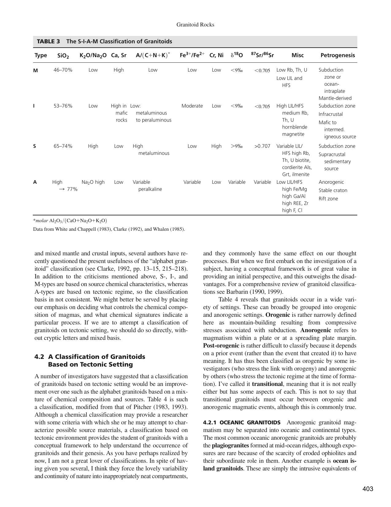
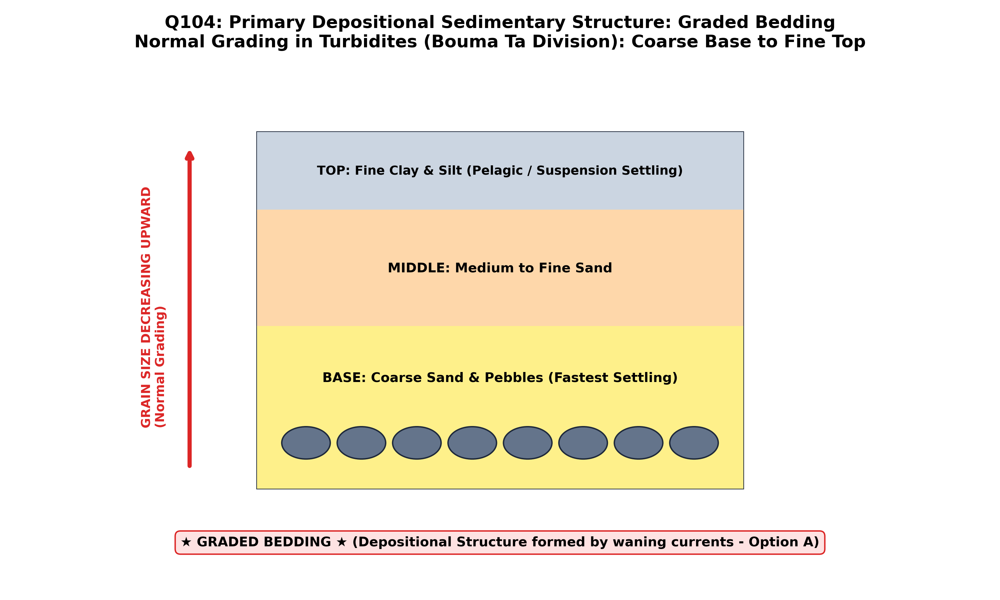

1986 PRINCIPLES OF ENGINEERING GEOLOGY 3 y also called “consolidation™. During this process many physical and chemical hanges take place within the sediment. Such changes are called the: prescott ‘ocess is described as “diagenesis”, The f dingenetic changes and the pr: > t diagenesis includes three processes: @ compaction, (ii) cementation, ind (iid) recrystallization. on = () Compaction. Compaction occurs when the weight of overlying ‘ layers compresses the sediments below, As the grains of sediments are pressed closer and closer together, there is considerable redue tion in pore space and volume, Fine grained sediments, such as clays are consolidated more effectively by this process. owt: (ii) Cementation. When watcr circulates through the pores of coarse grained sediment, dissolved mineral matter is precipitated between the grains which causes cementation, The most common cementing materials are silica, calcium carbonate, iron oxides and clay minerals. The identification of the cementing material is relatively simple matter. Calcite cement will c{fervesce with difun ie hydrochloric acid, while iron oxide gives the rock a charactersti red, arrange or yellow colour. Silica, the hardest of the cement produces the hardest sedimentary rocks. a Git) Recrystallization. Although most sedimentary rocks are lithified by fi compaction, cementation or a combination of both, some are consolidated chiefly by the recrystallization of their constituents. Chernically formed rocks, such as limestones, dolomites, salt and gypsum i are the examples of the rocks consolidated by recrystallization, 6.3, CLASSIFICATION. Br i The sediments from which sedimentary rocks are formed, may. be har | divided into 1wo major groups: (i) clastic sediments, and (7) non-clastic 1 fiji sediments. % i 6.3.1. Clastic Sediments ee 4 “Clastic sediments” are broken fragments of preexisting rocks ranging in size from minute clay particles to very large boulders. Clastic rocks ae A formed by the mechanical accumulation of grains of clastic sediment’. Depending upon the size of constituent grains, the clastic rocks are classified Bik into three groups:.(i) rudaceous rocks, (i) arenaccaus rocks, and iil) argillaceous rocks. "4 Rudaceaus Racks. These rocks are formed by accumulation of bigger rocks fragments such as gravels, pebbles and boulders. If the grains af Tomalne eeu “conglomerate” and i tiey are angular, the rock a cia”, oe Arenaceous Rocks. These rocks are vom r sand i indivi u posed almost entirely of sand grains. When individual grains are rounded, isealiad = “a and “grit if Uw grains dre angular. Called “sauvlsrones woot GEDIMENTARY AND METAMORPHIC ROCKS ‘ei jiaceaus Rocks. These rocks are made up of = Are Shate” and “mudstone” are typical allure Tine grained scl of clay-sized sediment, Tocks which are j compos. ‘There are some clastic rocks which do not fit into the above sai spssifeaton- ‘They require consideration of mineral composition also Te Sxample. when appreciable quantities of felspars are prescat in a sandstone. ye rock iS called “arkose”. When the sandstone contains an appreciable quantity of clay as well as angular quartz grains, the rock is called Heraywacke”. In addition there are many clastic rocks which contain grains of more than one size. For example, a rock containing a mixture of sand and silt may be classified as “sandy siltstone” or “silty sandstone” depending ‘an which particle size dominates.
6.3.22 Nonelastic Sediments
Nonelastic rocks include those sedimentary rocks which are formed by chemical precipitation of minerals from water or by accumulation of remains of animals and plants. ‘They are classified into two groups: (i) chemically 1 formed rocks, and (ii) organically formed rocks.
Chemically Formed Rocks. These rocks are formed when mineral matier in solution is precipitated from water, usually because of changes in water temperature or in the chemical content cof water. Such cheinical sediments are derived from the dissolution of materials front older rocks and: subsequent transportation of dissolved chemical substances into a sea or lake. On the basis of composition, the chemically formed rocks are classified f as follows, () Carbonate Rocks, “Limestones” and “dolomites” are the most abundant carbonate rocks. They are formed by the chemical precipitation of calcium carbonate from sea water.::
(ii) Salt Rocks, Evaporation is the major process involved in the deposition of chemical precipitates. The salt deposits lente PY the evaporation of saline lakes are called the case ‘ principal minerals of these deposits are chlorides and sul ae us Na, K, Mg and Ca, Rock-salt, gypsum and anhydrite a y the most abundant minerals of-evaporites. They commonly, [Fm massive beds.
ii) F, 1 jich are:
(ii) Ferruginous Rocks. This group includes thse Lage formed by the chemical precipitation of iron ox sehghas deri: Pome 2 bearing minerals such as si le, ‘contain a high proportion of iron shige shes ‘an-example of hematite, chamosite and pyrite. “{ron-stone” 'S ferruginous rocks. en ailioa 1s F ) Sil formed whet () Siliceaus Deposits. Siliceous rocks aT a sre flint, chert::
Precipitated from water. Examples of such deP0*;; Jasper and agatc.: ee PRINCIPLES OF ENGINEERING Geoug: vcany Formed Kocks. These rocks are composed maint a Ree or tants. Organically formed rocks are subdivided) two groups: (i) biochemical rocks,and (/f) organic ne “a (i) Biochemical Rocks. The biochemical sediment is produced plants and animals living under water, extract from it disse mineral malts, usually calcite, to form shells or other hard These shells accumulate on the ocean floor in great quanta form sedimentary rocks. An example of the biochemical “shell ~ limestone”. % (ii) Organic Kocks. Rocks containing organic matter belony B to ' group. An example of such rocks is “coal”. These are also the “carbonaceous rocks”. i 6.4, TEXTURE “Texture” means the size, shape and arrangement of grains in ‘As sediments contain particles of various size, grain size is an impr factor for the description of sedimentary rocks. Depending. upon the panicles of sediments are classified into pebbles, gravels, sand, silt and and each of these gives rise to a particular type of rock. This classific is shown in Table 6.1. 4; Table 6.1. Particle Size in Sediments a Grate | Grainsce | Hoot tone Pebble 10 mm and above: 4 i Gravel 2mm to 10mm" Conglomerute Sand 0.1 mm to 2 mm Sandstone Silt 0.01 mm to 0.1 am Silistone a t Clay |Less than 0.0] mm Shale 4 ” _The grain size of sands varies from 2 num to 0.1 mo. They re ivided into four Broups: () “very coarse sand” (grain size more than me Pei sand" (grain size 1 10 0.5 mm), (ii) “medium sand” 5100.25 min), and Civ) "fine sand” (grain size 0.25 to 0.1 mn Sediments which contain grai i i r r grains of various grades in nearly ay pie abe ‘unassorted'. On the other hand, sediments conlé a eaeen Hae grade only, are said to be “well assorted” or “rae ments deposited nn pent na be high in many wind deposits and ag) Tees well pride een sloping sea floors. Stream deposits are Cam The sha 3 facial deposits are generally unassarted. a apes: it a 53 siderable ue ety Constituent grains of sedimentary rocks are OF in the study of texture. The grains of a rack Mma) ggikSEOMENTARY AND METAMORPHIC ROCKS z artially rounded or angular. Grains which have bee counted rable distances commonly show a high degre oP io cams is that have resulted from disintegrate é founding ercas eval ion, volcanic explosion of weal action ae commonly angular. In breccias the rock fragments ular ‘while in conglomerates, they are rounded. bai ‘The chemically formed rocks may contain rounded concretions. If they - of the size of a pin bead (size Imm), the texture of the rock is said to ae Clic", and if they are of the sizeof a pea, the texture is described as spisotitic”The texture and mineral composition of sedimentary rocks are of great value in determining, the nature of the environment at the time when the " sediment was deposited, A conglomerate, for example, indicates a high * ergy environment.such as a swiftly flowing stream where onfy the coarse we material can be deposited. The. arkose suggests a dry climate where litle chemical alteration of felspar is possible, Carbonaceous shale indicates a Jow energy. organic rich environment, such as swamp or lagoon. 6.5, STRUCTURAL FEATURES The important structural features of sedimentary rocks are ratification, ~ i: lamination, proded bedding, current bedding and ripple marks. Besides these, there are some minor structures such as nud cracks, ruin prints, tracks of terrestrial animals, etc. These structures give clues to the past environs ment 1 Stratification. All sedimentary rocks are, in general, characterized by 0 stalification. Deposition of sediments into layers or beds is called the a stratification. The planes dividing different beds are called the “bedding vlanes” (Fig. 6.1). The thickness of a bed may vary from 1 few centimeters ‘0 many meters. Different betls are distinguished from each other by i) dilersnee in mineral composition, (7) variation in grain size or texture, (U8) illerence in colour, and (jv) variation in thickness. if fig lamination. Thin bed-: fe a ee less than one cen- BEDDING PLANE f es Melee, in thickness, ‘are g PSESEPERESE ASHES ah Pais “lamination” (Fig. _———————— LAMINATION roo aman is usually ¢ aaa eel ’ in very fine geained 9 PSs Tks tke sha nad gives: LE é fon ite characteristic ig, 6.1, Suatification. Bed 2 show lamination’ j laine eRe i.d to lie with their flat Surfs at FOCKS, the clay and other flaky minerals ten KE i Urfaces pars 7 Batis id be noted that lamina tion ref Parallel to the plane of Jamination..[t shou! Pein a bed whereas siege {0 Parallel arrangements. of minerals WN tana. j icalion refers to a succession of beds separated BY “ ‘ PRINCIPLES OF ENGINEERING Geoy, ' an Graded Bedding. Im TOP T= SSSES) sate ey “graded bedding” each bed RSs] a shows a gradation in grain PORNO size from coarse below to Raise cece e088 Re y fine above (Fig. 6.2). The ese tol es graded bedding results from cr rapid sedimentation i Sosss asst ae j water. This structure is com- That PotiaeaTk ce i monly found in graywackes. RM Het, The btn of a pad te Doraerion ES * cnerally lies on shale an oe 0% 020°a%" o a 4 i in a consist of a coarse grit. eno eo 28) SOAR SE GRIT It than shows an upward BOTTOM i transition Lowards finer Fig. 6.2. Graded bedding, maicrial. At the top it com “< ” ‘ monly ends in shale a nick Current Bedding. Current bedding is also called the “cross beddil ‘ In this structure minor beds or laminations fic at an angle to the plane MINOR BEDDING a i REESE MAJOR BEDDING Bi! as gees BS Zee ee ' Fig, 6.3. Curent bedding. a general stratification (Fig. 6.3). These ininor beds commonly terminate ube ie Uic top where they are overlain by the next current bedded deposit, Current bed ik is commonly found in shallow water and wind formed deposits. This # i indicates rapid charges in the velocity and direction of flow of sireams carrying sedisnent. In current bedding, the minor beds are inclined andl St in the fonn a wedge in the direction of water currents or prevailing wind i Ripple Marks. “Ripple marks” PQA i; q are the wavy undulations seen on the Baebes aig surface of bedding planes (Fig, 6.4), “+= oe FE They are produced by the action of Oe Ft waves and currents in shallow water, %: This structure may also be formed on a a the surface of deposits formed by a al wind. Ripple marks are of two types | — - 2 () asymmetrical or current ripple Foci re. Thurs, and (i) syinmewical or ogeid- Litt 2's e ts sae lotion ripple marks. The oscillation a i Fipple marks are useful in determine. Fj ce = ing top and bowom of def in- Fig. 6.4. (a) Symmeu ical PMs) 7 formed beds. (6) Assymetrical ripple mat ee pe ma MR ae ocKsl SEDIMENTARY AND METAMORPHIC Rocks 3 Ay arinor Structures. The surface of edi 2 ee cgnuctures suchas mud cracks, rain prints,and mie ‘Some minor structures are commonly preserved as casts. “Mud cracks” A ae. the fine grained sedimentary rocks that have been exposed rita found in” qub-aerial conditions. They form a network of fissures enclose ving under cae ud racks are characesite of he food piso ge agi sight sallow depression rimmed by slow ie Shion 2 em ps orc whe on wee tr jh surface of Fine grained sediment. “racks and irs” ae the aad indicating the passage ‘of some animal over soft sediment, All these fie: structures if found in formations that hayc been disturbed by severe folding,-are of great help in determining the top and bottom of beds. es Concretions. “Concretions” are variously shaped masses oe nodules of rnincral matter found within a sedimentary rock. Their shape may be spheti-: val ellipsoidal, lenticular or iregular. Concretions generally consist of cal cium carbonate or silica and often possess an internal radiating or concentric structure. They are formed by the deposition of mineral matter from percolating solutions ‘about a nucleus. Their chemical compesition is generally: +” different from the enclosing rock. They often represent a concentration af» one of the minor constituents of the host tock. For example, in limestones there are concretions of chert or flint, in clays concretions ure of calcium carbonate or iron sulfide, and in sandstones the coneretipas are comunonly of iron oxide or calcium carbonate. 2 pee Si, a fr AVG, SANDSTONE ‘ AVG. SHALE. (spre AVG TG QUE 4.
1 RocK 3 SE (ips: is Lig nd. wre Gos Spy zone Allo, iN bia: Roc Fer03 ed fi Borors ei] sanpetow€ 2S ) te 3] SHALE cote peau geee rayne! Feu it| bee RNY care rites 62005 ei yetsnied ee at:
it 6.7. MINERALOGICAL COMPOSITION: is ‘The minerals of sedimentary rocks can be divided into wo major grou.: (i) minerals which are resistant to weathering and (#2) minerals which products of chemical weathering, The relative stabilityes of mineral ‘weathering are shown in Table 6.2. This table shows that quartz is on £ the most resistant minerals whereas olivine is easily altered by chem he weathering. The position of minerals shown between quartz and olivine f intermediate stabilityes. Table 6.2. Relative Stabilities of Rock-forming i Minerals During Weathering a 3 Low stability Olivine: 4 Anorthite; Fle. 4 cape { Intermediate Augite a 4, 8/2 Plagioclases Hornblende Ms i Albite Biotite a! | K-felspar a:: Museovite 4 High stability Detrital sedime a a fanning minerals sacha Koen Of the most resistagiaiil™ Shall amounts of garnet an -felspar, mica and sometimes plagioel Focks which are formed Ponies Spinel may also occur. Sediment minerals frequently contain calcite, Of reanic_precipitatio siderite and chert, Sus, aragonite, gypsum, halite, hema In addition to the detgi fee cay Zoeks May contain clay Minerale nt chetuical precipitates, sedimel ziti: These thiverals result from alin Montmorillonite, Illi"=»:: *S, Such as felspars, ofivi Weathering of earlier primary § "Sllvines and pyroxenes. So Pt ocks {SEDIMENTARY AND METAMORPHIC Rocks ‘ sEDIMENTARY ROCK TYPES La | Conglomerate 2 4 nature. Consolidated gravels. Colour variable: ‘ sral Composition, Rounded pebbles are sex as 4 5 Rei cominonly consists of sand or silt and ite Bite mata A ‘The Tn carbonate or iron oxide, The individusy pebbles may net cn. imposed of quartz or may be rock fragments that have not tee ce iis Fenture. Very coarse grained. ad Varieties. Fine conglomerates grade into coarse sandstones, ifthe a 1 contains angular or subangular fragments, it is called “breccia”: The an =: gulaity of rock fragments in breccia suggests that this material could not) = have ravelled very far from its source. - % Sandstone ae ' Nanure, Arenaccous. Colour variable according tthe type of cementing” material. Rocks having silica or calcite as their cementing material are Tight” in colour, those that contain iron oxide are red to reddish brown. i Mineral Composition. Quartz is the chief mineral constiroent. Smail amounts of felspar, mica, garnet, etc. may also occur. Cementing- material, E may be silica, calcite, iron oxide, clay or chlorite. S Texture. Sandstones are composed almost entirely of well sortedysub- § angular to rounded sand grains. The texture of sandstone is: (i), “coarse 2. |. gmitned” when the size of grains is between 2 to 0.5. mm, (ii) “mediam:* Sratred”, when the size of grains is between 0.5 to 0.25 ten, and (itt) “fine Srained", when the size of grains is between 0.25 to 0.1mm, ee ee so, ucture. The common structures seen in the sandstones. are static tion, current bedding, ripple magks and rain prints. a Varieties. (i) Orthoquartzite. White siliceous sandstones in which most he i of the Brains as well as cement consist of quartz, are called bic F ee a 1) Grit. IL is a sandstone containing sharply angular sre is ‘eat oa: oe trained sandstone containing notable amounts Cy 2 angurg, iY) Graywackes. Itis a grey coloured rock containing FONT Ty:: hone H8ments of quartz. and basic igneous rocks. ane TS Ae rragts OF Slay material, Graywackes may contain 8 WUER AT: Shaken Cl8Y OF chlorite or both. The finer grained grmmatOe eT ig i ing « 0? Glauconite sandstone. is green coloured san" S * © mineral called glauconite. A 4 Battie mo ee asd s Shale itp oats i estan os at y ble, Shades are often soit amd CHR ET Sy 4: site Argillaceous, Colour variable, Shiles WF 9° ¢d by a knife, ‘ Bobi ES sete 2 S28 inert Composition. Shales are composed mainly of clay mineral ke kaolinite, monunorillonite and illite. Synall amounts of other minerals such, as quartz, mica and chlorite are also present. a Texture. Very fine grained with grain size less than 0.01 mm. A Structure, Lamination, ripple marks and some organic structures may, be present. = Varieties, (i) Calcariaus shale. When considerable amount of calcium carbonate is present. (tf) Ferruginous shale. When considerable amount i jron oxide is present. (/ii) Carbanaceous shale. When considerable amour of carbonaceous (organic) matter is present. (rv) Siltstone. [t is a rock containing compact silt (grain size 0.01 to 0.f mm). (v) Mudstone. [Vis; structureless rock containing compacted mud. SS i. Limestone ig Nauere. Calcareous rock. Formed chemically or organically. Commonly white, grey or cream coloured. Often contains fossils. Limestones z idc ic, arey are lified by their softness, fossil content and effervescence in “dilute hydrochloric acid. Be Mineral Composition. Calcium carbonate in the chief constimen Magensium carbonate is also present is variable amounts. Chalcedony, sill and clays are present as impurities. Some limestones may also contain: <calcareous shells of marine animals. ——?
‘ Testure, Limestone isa fine grained rock. It is commonly compact and i Lapa Some limestones may have oolitic structure. Organic structures are coats: The iempoant varieties of limestones are as follows. ( a pee A Porous fine grained and generally friable limestone composed pial of caer shells, is know as chalk. (if) Oolitic limestone. Thi imlenea a fee of rounded grains resembling fish roe. Iti ¢ been formed by chemical precipitation. Under the mito scope each grain (Oolith) is see! be i Cat eels | ‘n (o be made up of concentric layers OF “aCO,, aftcn with a bit of shell at the ©. (iii fi aa in which the percentage of cl centre. (ii) Marl. Impure limestones wheat and calciwn carbonate is almost equal, af i Dolomite + BS al Dolomites resemble limestones. 4 mineral Composition. The chief consti a dolomite mineral [CaMeiCOy ‘ie Constituent of dolomite rocks IS Dolomites ae generally 01 orved by ones ee are formed when calcium ane vonemal chemical precipitation. They This process is called “dolasiliention of limestone is replaced by dolomite tion of calcite and dolomite pl Depending upon the relative proper sified 4s follows,, tie limestones and dolomites are Jas: AOGKSSEDIMENTARY AND METAMORPHIC ROCKS 195 (i) Limestones. Those rocks which contain more than 90% calcite and i Jess than 10% dolomite. q (ii) Dolomitic limestones. Those rocks which contain 90 - 50% calcite and 10—50% dolomite.
(iii) Calcitic dolomites. The rocks which contain 50 - 10% calcite and 50—90% dolomite.
(iv) Dolomites. Those rocks which contain less than 10% calcite and more than 90% dolomite. Texture, Dolomite is a fine grained rock. I is commonly compact and massive.
Iron Formation Nature, {rou-formation is a banded iron rock. It is formed duc tu chemi- t cal precipitation of iron oxide and chert.
‘Mineral Consposition. The iron-formation consists mainly of cherl-magnetite, chert-hematite, and chert-hematite-magnetite. Other minerals that are commonly present are siderite, ankerite and chamosite.
Texture and Structure. In these rocks the sedimentary banding is generally well preserved. Laterite Nature. Colour is often red, brown or yello:w. Latcrite is a residual product of weathering in hot humid climate. It occurs as mantle over bed Tocks.
Minerals Composition, Laterites are essentially clays rich in aluminium and iron hydroxides with minor amounts of silica.
Texture. Porous and concretionary. 3 Varieties. Laterites rich in aluminium hydroxides are called “bauxites”. Bauxites commonly show “pisolitic™ structure.
6.9 Metamorphic Rocks



“Metamorphic rocks" are formed from the alder rocks when they are; Subjected to increased temperature, pressure and shearing stresses al considerable depth in the earth's crust. The older rocks may be either sedimentary, igneous or other metamorphic rocks. During metamorphism = Tecrystallization takes place essentially in the solid statc and new minerals and new textures are produced,:
6.9.1 Agents of Metamorphism B 3
The agents which bring about metamorphic changes in the rocks are:. (i) heat, () uniform pressure, (i/i) directed: pressure or stress, and (ir) chemically active fluids and gases, z Heat. Within the earth, temperature increases with depth and as a result J appreciably high temperature exists at great depths. In the outer parts of the. ‘os PRINCIPLES OF ENGINEERING GEOLOgy arth, the common cals for elevated temperature is the intrusion of hat igneous bodies. =: a Uniform Pressure. The static pressure on rocks is caused by deep burial, This pressure is due to the weight of the overlying rocks. As temperature gradient exists within the earth, the static pressure 15 usually associated wit h higher temperatures.:
Directed Pressure. Directed pressure or stress operates during folding, movements that accompany mountain building. Generally directed pressure plays an important role near the earth's surface. As the depth increases, th effect of directed pressure decreases and that of uniform pressure increases Chemically Active Fluids and Gases. Chemically active fluids and gase when pass Unrough the pores of rocks, they bring about changes in” thei original composition. The source of these chemical agents is generally the intrusive igneous body within the country rocks.. Z 6.9.2, Processes of Metamorphism 3: The processes which operate together in the effected rock to bring about metamorphism are: (i) granulation, (ii) plastic deformation, (fii) reeryst libation, and (iv) metasomatism. a Granulation. Pressure shatters rocks and the friction is so great that d rock are partially melted. This process where crushing of rocks takes pli without loss of coherence, is called the “granulation”...
Plastic Deformation. When a solid is subjected to stresses, its sha changes. On the removal of stresses if the solid does not regain its origin shape, its is said tp be plastically deformed. a Recrysiallization. “Recrystallization” means either the formation new minerals or formation of new crystals of the pre-existing minerals: ae fluid of rocks is thought to facilitate this process. Recrystallizal fuses mineralogical and textural changes in rocks during metamorphism Metasomatism, “Metasomatism™ i 7?
. mi” is the process in which the ongi Col c]. a B's Seen Tocks are changed primarily by the addition or removal erial. This change is caused by the move f hydrothermal fluil through rocks usually under hi ment of hydrothermal 10 'y under high temperatures and pressures.
All the abo: i "a siiainorpes rie Processes usually operate in combination to proevs deformed, This defor nee eraulation individual crystals are plastitw tion the structures of alta es recrystallization. During recrystalliZ flattened in the direction a a! minerals are changed. They are clongale® in the rocks. New ia me stress. Thus new textures are pro@ and compounds. are formed as a result of exchange of eleme ‘ nOCKSSEDIMENTARY AND METAMORPHIC ROCKS 197
6.40 Types of Metamorphism
The main types of metamorphism are: (i) cataclastic metamorphism, (ii) dynamic metamorphism, (ff) contact metamorphism, (iv) plutonic metamorphism, (v) regional metamorphism, (vi) metasomatism, and (vtiy relrogressi¥ve metamorphisin.:
6.10.1 Cataclastic Metamorphism.
The metamorphism in which only the directea pressure or lateral stress plays dominant role, is called the cataclosiie melamianplise"s These Ses. ses are caused by earth movements such as folding and faulting. They operate mainly in the upper part of the earth's crust where the temperatures are moderately low. Due to these stresses rocks are crushed. ground and deformed. New rocks thus formed are called “cataclastic rocks”. They show mainly mechanical crushing with little new mineral formation. Examples of cataclastic rocks are “mylonites” and “fault breccias”.
6.10.2 Dynamic Metamorphism
A metamorphism which is associated with, high pressure with line increase in temperature, is called the “dynamic metamorphism”. \n this case anew rock is formed partly by the mechanical effects of flow and partly by the growth of new minerals that develop in the direction of flow. Slates which possess flow cleavage, are perhaps the best example of a dynamically metamorphosed rock.
6.10.3, Contact Metamorphism Contact metamorphism’ is also called the “thermal metamorphism”. This metamorphism is caused due to Tocal heating of rocks by the intrusion of hot igneous bodies nearby. ‘The zone of contact metamorphic tocks which Secure surrounding the intrusion is called “aureole” (Fig. 6.6). A> tempers ture decreases away from the intrusive, the outer rocks in the aureole are Jess intensely metamorphosed than that of the innermost rocks. Thus depending upon the degree of allcration, the rocks in the aureole can be divided into concentric zones which may differ greatly in mineral assemblages. Tn the contact metamorphism heat plays dominant role and its general, effect is to promote recrystallization. In this process, minerals grow haphazardly in all directions and the metamorphic rock acquires a granular fabric which is called the “hornfels texture”. Contact metamorphic rocks do ot shew: schisiosily; During contact metamorphism transfer of magmatic vapors and gases fram an igneous body into the country rocks often takes place. These emanations react with the country rocks and form new minerals, Such a process is called the “pneumatolytic metamorphism”. A localized burning or baking effect may be produced at the contact ‘of an igneous body and the country rocks. This effect is described as the “pyrometamorphisnt”. PRINCIPLES OF ENGINEERING: ee | ill cks such: m of Shales. Where argillaceous rock as contact Mela an igneous intrusion, a metamorphic aureole shales, ean ab aureole metamorphic Zones of increasing intensity durermast Zone of Spotied Slate, The spots in the spotied slates ® ae Composed either ofa single mineral ora fine grained mass, ni q of different minerals as: ‘potted Hornfels. Nearer the igneous in- i Intermediate Zone of Spotte i 7 3 ° ee the cleavage of the slate disappears and the rock becomes, harder. The spots in this rock are now due to small crystals of andalusite and the groundmass reerystallizes to form mica and quartz. F: an (hi) anermost Zone of Homfels. Close 10 the contael of intrusion thorough recrystallization takes place and hornfels, a fine grained hard rock is formed) Fig. 6.6). A “ IGwEous INTRUSION weeerscoss. y fs rill Ress ae Pt fe A shorten 2232 seeefesi* q * SLATE, = ell Soa ee See 2 HORNFELS Saee e 7 Fie 66 Contact metamorphic aureole. Fig. 6 7 Prophysoblust distorting groundmass. ee In the hornfels porphyroblasts may be present. “Porphyroblasts™ are oa the large, well shaped crystals which are sel in a fine grained matrix (Fig. 5.7). These may reach 4 or 5 centimeters in size, Porphyroblasts crystallize ie in the solid rock during metamorphism. The miner which commonly aniih 1 ePhyroblasts in he contact metamorphic hornfelses are cordierite, - ‘usite and sillimanite, Homfels may form from any lype of parent rock. 2 Te oe a ore not limited to contact metamorphic rocks. Fegtonally metamorphosed rocks, 4 Contact Me 5 Be of sandstones, proyrac et oF Other Rocks. The contact metamorphism * be summarized a follows, PM Hesiones and basic igneous rocks may 1. Pure sandstones reery a With perhaps a Tinks PZ 19 quartzites composed of quartz Purities oF clays ang ao and magnetite derived from the im- a calcite marbles, oxide respectively, Pure limestones yield ROCKS:II;SEDIMENTARY AND METAMORPHIC ROCKS 199 i 2. When medium to coarse grained sedimentary rocks such as graywackes and impure sandstones, are subjected to contact metamorphism, aluminium bearing minerals (e.g. felspars) are converted into micas and garnets, When carbonate minerals, such i as calcite, are present as impurities in the parent rocks, i hornblende, epidote and diopside are formed. 4 3. Impure limestones containing sand, chert or clayey material! during contact metamorphism produce calc-silicate rocks. These i rocks contain mostly calcite, lire-garnets, olivine, serpentine, i wollastonite, tremolite and diopside. i 4, On contact metamorphism basic igneous rocks, such as basalt and { = gabbro, give rise to hornfels containing generally pyroxene and | 2 plagioclase. i rol
6.10.4 Plutanic Metamorphism
At great depths below the earth's surface, static pressures and high temperatures operate together. The metamorphism caused by these factors li is called the “plutonic metamorphism". High static pressure favours reduction in volume. Hence during recrystallization mainly denser minerals are Hi formed. The metamorphic rocks produced in this way commonly have an even grained texture. Such rocks are called “granulites”.
6.10.5 Regional Metamorphism i
When directed pressure and heal act together in the presence of migrat- i ing hydrothermal Muids, the rocks are metamorphosed over wider areas. This kind of metamorphism is called the “regional” or “dynamothermal metamorphism”. Regional metamorphism takes place at great depths, such i as in root regions of fold mountains, where temperatures and stresses are q high. i Heat promotes recrystallization and the stresses cause shearing and flow * Ht f movements which produce new structures in rocks. The new minerals that; i grow under directed pressure are usually Mat, elongated, bladed! or Maky in nature. Examples of such minerals are muscovite, biotite, chlorite, tale and H amphiboles, ‘These minerals arrange thentselves in parallel: layers and Ht produce a bunded or laminated structure, called “foliation”. The most common foliated metamorphic rocks are slates, phyllites, schists aad gneisses. ‘ Foliated rocks split easily into flaky sheets.
When shales are subjected 10 regional metamorphism, the characteristic minerals that develop in succession with the rise in temperature and stress H are chlorite, hiulite, garnet, staurolite, kyanite and sillimanite. Thus shale changes to “state” in early stages, to “schist” in the middle stage and finally t lo “gneiss” at the highest temperatures of regional metamorphism. The schist commonly contains staurolite, garnet, biotite, muscovite and quartz e ' a PRINCIPLES OF ENGINEERING and the gneiss contains sillimanite, gamet, cordierite, potash felspar anc quartz. a During regional metamorphism sandstones and limestones do not fon foliated rocks, They recrystallize into “quartzite” and “marble” respective. Iy. Both of these rocks show granular structure, 4 Basic igneous rocks, such as basalt, dolerite or diabase during differen grades of regional metamorphism, change into green-schists, amphibolites, granulites or eclogites as follows. a (i) During low grades of regional metamorphisin, basic igneous rocks change into “green-schists” containing mainly chlorite, albite and ° epidote. e a At medium to high grades of metamorphism, grcenschists are converted into “aniphibolites”. Amphibolites are coarse grained rocks containing garnet, hornblende or diopside and plagioclase. Schistosity or bands of dark coloured minerals may be present, (if) At the highest metamorphic rules, “granulites” are formed, Granulites possess a granular texture and contain plagioclase, hypersthene and diopside. “Charnockites” are the most conimon: erinulile-type rocks which are formed from basic igneous rocks. Hypersthene is the characteristic mineral of charnockites: 4 (iy) In ibe mee deep seated conditions where very hizh pressure prelate He called “eclogite” is formed. Eclogite is ars ied granulose rock consisti nd omphacite (pyroxene), Though eclogi ing of pyrope Sera ommbacte (pyroxene). Though eclogies are often classified q cks, their origin is rath: cure, lad: belived tobe of igneous orgine oneue: Tey a 6.10.6, Metasomatism 4 Many metamorphic reactions a i i isochemical. This implies ace acoprally considered to be essentially” phic reactions, the bulk che ig recrystallization and other metamorloli cancers ‘oelunty of the rocks has remained nearly constant, from igneous magma, the ag ek Py cteulating fluids derived) “metasomiatisn", In other sro, the te reo peism tscalle a Rtaorphismin which much material sade oie red by pe acai mal fluids. During metasomnatn <dded to the rock by the hydrotherchanged substantially but its mee composition of the parent rock is” occurs without any deformation, ike iehines eal ene rock am usually preserved, lures and structures of the original: — earns. Durin, Bi E g Contact met a ot “gy, Ps lao is A a fea: ‘Scarns™ ate the produen soa inelasomatism is particularly wit mesons. When granitic nage ieee oe COO magma rich in water and other pocKSI:SEDIMENTARY AND METAMORPHIC ROCKS 201 satatte components cores jn contact with Timestones, a variety of minerals including magnetite, gamet, diopside, enstatite and forsterite are formed, Netalliferous ore deposits containing sulfides of lewd, zinc, copper and iron are commonly found in association with scarns. y Granitization. Some granites show evidences of former sedimnemary bedding. If they arc traced towards the margin, they gradually grade into gneiss (migmalile), felspethized schists, mica schists, and finally to shale, Such granites appear to have formed by the metasomatism of schists where srw enineral matter is added and the old is carried away. This process of transformation of country rocks into granite is called “granitization”. ‘The material which is displaced during grantization, commonly contains Mg, Fe and Ca. This results jn the concentration of ferrornagesian minerals, such as ati, gamel, pyroxene or amphibole in the peripheral zone. Thus sith the i a formation of granites, a frontal zonc of Fe - Mg enwichiment is formed. This sa gone is called the “basic front". IL must be remembered that all fronts are % vot basic. Silica fronts of various kinds are developed when quartz rich rocks i are granilized. Granites and granitic rocks are known to have formed from various types of igneous, sedimentary and metamorphic rocks. During |: granitization the transfer of material is caused by the infiltration of gaseous i or liquid emanations (granitizing solutions) into country rocks or by diffusion of ions in a solid medium, H) Lit-Par-Lit Injection. Near the contact of the intrusive body, emanations from the invading magma are olten injected into the metamorphosed i q country rocks along the foliation and other planes of weakness. When an Hii 1 appreciably large quantity of magmatic fluid is introduced in the country rocks, numerous thin sills are formed between layers of bedding or foliation. { i This phenomenon is called “tit-par tir injection”. When there is a large scale transfer of igneous material in the surrounding country rocks, a mixed type f f of rock having gneissose structure is formed. Such mixed rocks are called i i the “migmatites". Most migmatites have a somewhat granitic composition. i
6.10.7 Retrogressive Metamorphism i '
When high temperature metamorphic mineral assemblages are changed to a low temperature mineral assemblages, the process is called the i “retrogressive” or “retrograde” metamorphism. Such changes take place } q when an intensely metamorphosed rock is subjected citer to strong differential movement or to hydrothermal activity. In zones of displacenient an 4 amphibolite may be converted to 2 green-schist and due to hydrothermal alteration a serpentine rock may change to talc-magnesite-schist. H
6.11 Metamorphic Minerals
The minerals which form in metamorphic rocks are largely controlled fi by the conditions of temperature, pressure OF stress. These minerals can be i divided into three groups; (i) slress minerals, (ii) antistress ininerals, and > i AMT er sesame a gar Pon pike.) a mi | pRINCIPLES OF ENGINEERING. - GEOLOGY ee. ‘ 1g, "Suess minerals” are formed under conditions of RE, ht ci) relict miners Te regional metamorphism. They are usually flgj te or directed pean flaky in nioture and erow parallel to the direction i \ tabular, SE ss snincrals play 27a)0° role in producing parallel sin least presses which ae horacterstic of many metamorphic rach 4 sand te) - jcas, cl albi F nips of slress minerals are MCAS. chlorite, talc, albite, amphibole kyanite and staurolite-: + a oe ” ‘The “antistress minerals” develop mainly under conditions of uniform:| essure, such as in plutonic ‘metamorphism. These minerals are often equ fei Mjnmensional in 1009. Examples of antistress minerals are pyroxenes, olivine Ae | | eit, sillimanite,cowierte and spinel. a During metamorphism recrystallization of minerals takes place es, | tially in the solid slate, Complete recrystallization is not always possible Fore certain original minerals continue to SUEVi¥e in the metamon i rocks. These original minerals which have failed to react to the chat conditions of temperature and pressure, are called the “relict munceral 6,12. METAMORPHIC ZONES; ie Below the earth's surface temperature and pressure both increase increasing depth. The degree or grade of metamorphism exhibited bya: therefore, varies with depth. On the basis of this concept Uwe epth x ‘of metamorphism have been recognized: (i) epizone, (ii) mesozone,: (iffy katazone. Be (i) Epizone, This zone of metamorphism occurs near the €a surface. In jhis zone generally the conditions of cataek rietamdrphism prevail. ES jit iy Mesozone. This the intermediate zone of metamorphista¥ fics below the cpizone. In the mesozone, the condil ons temperatures and pressures are such as to promote regi; metamorphism. ‘ a! iy Xam: The bottommost zone of metamorphism is, called ™ ‘lazone, In this zone plutonic metamorphism takes place, — 12.1. Grade of Metamorphisma Be 4 ‘The degree = ia called the Spuleorintian of inetamorphism that has affected a 10 Tieat and pressure to ee. It varies directly with the amoul the same commotion feral ee nected. Bary roel: et meaneephisn. The grade sacar assemblages in different on ‘ Be median aa igh ara dec po nares is expressed as Very i! Mee ted aay Fron the i. 6.8, Forexample slate and phyllite? i q as phan wile a high grade EneOus body, show a low #f es. MS mattis The inereiee etc. ene gociss is fa og) a in the grade of metamorphism # pOCKSESEDIMENTARY AND METAMORPHIC ROCKS a3 TEMPERATURE (SC) SESE \ luis Po A gal Getzeeae U tims baseline. oetend H: Z Nast New) @mape yatape Poor aaa 2 a foraccweric t > as 3 8F conditions ze. Fig. 6.8. Pressure-temperate diagram outlining ' approximate fields of various metamorphic grades. 1 accompanied by an increase in the grain size of rocks. For example, states 4 and phyllites are fine grained rocks while schists and gneisses are coarse. grained. i
6.12.2 Zones of Progressive Regional Metamorphism
In an area where argillaceous sedimentary rocks have been subjected to regional metamorphism, five metamorphic zones have been recognized on the basis of the occurrence of index minerals. The “index minerals” are those minerals which indicate the grade of melamorphisin. At successively | i higher grades of metamorphism, the index minerals that develop in the iH t argilluccous rocks are, first chlorite, then biotite, next almandine, afterwards i Staurolite, then kyanite and at the highest temperatures sillimanite. The | various metamorphic zones are named after the index ininerals, present in } 1 them, These zones in the order of increasing grade of metamorphism are as i follows. | (i) Chlorite Zone. In this zone the clayey material recrystallizes as muscovite and chlorite, Phyllites and slates are the typical rocks of this zone, (ii) Biotite Zone. In this zonc brown biotite appears in place of mus- |: covite and chlorite. The typical rock of this zone is biotite-schist.
(iii) Garnet Zone. The chiracterstic mineral of this zone is, por- i Phyroblastic almandine garnet. The important rock of this zone.is Bametiferous mica-schist. ” (iv) Staurolite-Kyanite Zone. Staurolite is: formed only in iron rick | 5 argillaceous rocks, while kyanite is farmed in-netmal argillaceous” ” < ) rocks, i a t Can yeu any ee si 4 () Sillimanite Zone, Gneésses containing biotite; garnet end sil oa ee limonite along with potash felspar occur in this Zone~ i: § 2 unoephic zones are emanated on a geological map, Rear a ve called the “fuograds. The sopra the boundaries Bee ica: onan sana metunepi rae in ters of ener amd py su. 3 ‘ 6.13. METAMORPHIC FACTFS cle telling a ve rocks are atten classified on the basis of metamorphic iM giant of different compositions, if metamorphosed under the. 4 facies, Prent roo erasure conditions. will characteristically contain the ‘ 2 eit minerals, They ae said co belong (0 the Same meta, phic facies. A metamorphic facies” therefore, may be defined as a group et ‘of metamorphic rocks that have formed under the same set of physicobe! or emical conditions and is characterized by a definite set of minerals. The Bi: ‘anions metamorphic facies are as follows. ’ Bo | (i Zeolite Facies. This facies represents the lowest prude of: tnelamorphism, The snineral assemblages include zeolites, As: chlorite, muscovite and quartz, a £ (ii) Green Schist Facies. This facies represents low grade of inetamorphisin found in many regionally metamorphosed areas, e The mineral assemblages of green-schist facies include chlorite,. epidote, muscovite, albite and quart.: a: (iiiy Amphibolite Facies. This facies is found in medium to bigh grade 1 metamorphic terrains. The mineral assemblages include: hornblende, plagioclase and almandine. Amphibolite facies repre: sents those inctamorphic conditions which ovcur in staurolite and sillimanite pende of metamorphism. ‘a (iv) Glaucuphane Lawsonite Schist Facies. This facies represents th metamorphisin that takes place in conditions of relatively lo i a temperatures but high pressures. Such conditions commonly occu f in young orogenic zones, such as Calilornia (U.S.A.) and Jap ae The mineral assemblages include lawsonite, jadcite, albi ghiucophane, muscovite and garnet. 4 M (v) Granulite Facies, This facies represents the maximum temper. Cure conditions of regional metamorphism, such as those found I Archaean terrains. The characteristic minerals of this facies @ i Phigioelase, hypersthene, gumel and diopside, 5 co) Exlogite Facies. This facies represents the most deep seated! con ot of metamorphism. The characteristic minerals are pyTP faa ae ommphaciie. Such mineral asswnblages are common 6.14. TEXTURES itmberlite pipes, many of which contain diamonds.. = TURES OF METAMORPHIC ROCKS -: rystalloblastic ‘Te 4. ae sacks i called ie Fs sine ‘The holocrystalline texture of metamorp ylalloblastic texture”. This texture develops duc ts y a oem: pockSAHSEDIMENTARY AND METAMORPHIC ROCKS: 5‘: ‘ phi mS.
stallization of mineral grains in the solid mediu y oe ysl ulin, are called the “idioblasts” se sualsshowing | fave any eine SP are described ay “tengfiga™ 0 Porphyroblustic Texture. When idioblasts occur as |: q: seed na ine grained proundmess, the texture called edashat levels A paltfarge woll-shpaed crystals of this texture are refered yee “ phyroblasts” or “meracrysts”. Less i i Granoblastic Texture. [n a metamorphic rock if the major constime 1 é ae granular equidimensional, the texture is called “granoblaxt”. i e Palimpest Texture. The remnant texture of the parent aa eect ¢ preserved in the metamorphic rock, is called “palimpsest texture”. 2 65. STRUCTURES OF METAMORPHIC ROCKS 4 B Cataclastic Structure. Cataclastic structure is found in rocks such as.. crush breecias and mylonites. These rocks are formed mainly under the sarTuenog of shearing stresses in the upper Zones of the earth's crust. Harder constituents of rocks are broken into pieces while softer ones are crashed to 7 powder. j Mauculose Structure. When argillaceous rocks are subjected to contact metamorphism, a spotted rock is formed in areas where incomplete rectas- 1 tallization takes place. The spols in the spotted rock are due to the development of bigger crystals of some inincrals (e.g. andalusite) within the fine mince! groundmass. This structure is called the “maculose structure”. Slaty Structure, Slaty structure is also called the “slaty cleavage”: This i structure commonly develops in shales thathavcundergone slight melamor- * phism. Rocks showing a slaty structure are very fine grained composed pritnarily of microscopic flaks of mica. ‘The slaty structure is caused due to fe the parallel orientation of flaky minerals, mainly micas and chlorite, Slaty i rocks split readily into thin sheets» The slaty cleavage may form at any angle r to the old bedding planes of the shale from which the staty rock’has been” A Uerived (Fig. 6.9 (c). i | F RA, Fe it & ESS —4_ Me pen |; Rasa ree eeetias ee 4 ORR as oy Gee; 1 jc, rO0KS. 1
(a) Schintose Seweture, (0) Gnoiasve siete (©) SY cere THE (dd) Graimulose SiTweUuse: Sen. & Sere es i ne Bia as é eA an: mi! ie PRINCIPLES OF ENGINEERING GEOLO@y: 4 eo. The most obvious structural feature of most 3 Piece iets alignment of minerals in parallel layers. ‘The ne metamorphic roel flaky minerals brought about by rectystaty lel arrangement of platy or flaky push BOUL By ag Tecan g regional metamorphism, is called “Jotiation”. A foliated rock.; mith ie oe grained and s largely composed of flaky and platy mineral, | is called schist". The foliation of schists is called “schistosity Fig. 65 ae (a). a i es} Gneissose Structure, In rocks that have been thoroughly recrystallized under conditions of high grade metamorphistn, the light and dark minerals | | may segregate into aliernate bards parallel to the schistosity, Such a coarse i “| grained metamorphic rock showing banded or streaked appearance, is cal. d, gneiss" and its structure is called the “gneissose pale The He s he coloured bands anc composed of quartz and felspars while dar coloured: bands contain ferromagnesian minerals. In’ gneissose rocks the planes of Bi schistosity are poorly defined [Fig. 6.9 (b)]. “4 Sthistosity are poorly e f Granulose Structure. Granulose structure is produced duc to.. | Predominance of eyuidimensional minerals such as quarts, felspar: Pyroxenes, and calcite (Fig, 6.9 (a)] The flaky ininerals are either absent ar present only in smal] amounts. Granulose structure is characteristic of roi cks. i: such as marbles and quariztes. Because granulose rocks have even grained: 4 e Brain i structure, they break with a rough fracture surface. a Bei Hornfelsic Structure, Homlelsic texture is characteristic of the con! ac Metammorphie rock called the “hornfels™. A liornfels is a dark, compact, fine 1} grained rock having granoblastic texture, Hornfeleig structure ie formed due to the predominance of equidimensional minerals such as felspars, anas dalusite, cordierite, and quart., sok j) 616. METAMORPHIC ROCK TYPES a aa Slate a a Nature, Slates are dark coloured exceedingly fine grained low grade metamorphic rocks, They have a remarkable Property called slaty cleavage! Mehich Petits them to be split into thin broad. shea Their colour is» Commonly gray to black hut may he green, yellow, brown ara vee a Mineral Composition. Slates are com fine grained Tale: bales ‘ ipused of a very fine grained mix- — ture - micas ind chlorite with some quar? and lip S enture and an: ae zs i slaty cleavage, Sucture. Slates ate very tine grained rocks which show: Origin. Majority of states c: 3 a; shales. Their characicrstig snyder te (ynaniic inetamorphism of 1 bedding planes of the original shalog © MY OT!™4Y Not be parallel to the a Phyllite oe Nature. A phyllite j i “a 2 Phyllite is a fine grained, foliated lustrous rock. ee; Ss = packs SEDIMENTARY AND METAMORPHIC ROCKS os: 7 sition. St consists of chlori i Mineral Composttron. | lorie, muscovite and qua Oech s fine that individual mit quan. The gains of tls rocks are so fine that individual minerals can not be recognized: Tarare and Structure, 18 fine erained rock showing foliated sinc | 3 sre, splits along foliation planes with an uneven surface bas cute:.: origin. Phyllles are formed due to dynamothermal metamorphism of pe shales. They represent an intermediate stage of metamorphism between skate; i and schist. * Schist 1 hs Nature. Schists are coarse grained metamorphic rocks which show well q developed foliation or schistosity along which the rock may’ be easily 8 woken. Their colour varies according to mineral composition. Mica-schists ws are the most common metamorphic rocks. p i * Mineral Composition. Mica-schists consist essentially: of quartz and | A 7 mica, usually muscovite of biotite, Mica is the major mineral which occurs Ve j in inogular Icaves and foliated miasses. Mica-schists frequently carry char: } ‘ geterstic accessory minerals such as garnet, staurolite, kyanite, sillimanite, andalusite, epidote and hornblende. i P Varieties. Besides mica-schists, there are various other kinds of schists; i which are chiefly derived by the metamorphism of the hasic igneous rucks. i! The mast important types are “tale-schist”, “chlorite-schist™, 4+ i “hornblende-schist” and “amphibolite”. These are characterized, as their names indicate, by the abundance of some metamorphic ferromagnesian. mineral,:
Testare and Structure. Schists are coarse grained rocks having @ Prominent schistose structure. They split easily imto thin sheets along the.” | Planes of schistosity, }: Origin, Schists are generally the product of regional metamorphisin. Gneiss * i Nature. A gneiss is a coarse grained, imegularly banded Rage sland Fock having poor schistosity. A gneiss has usually a light colour, although - = this is not necessarily so al oo Mineral Composition. Quartz and felspar occur together 1 lig cael E pout bands which alternate with dark bands of flaky a pacy ore eo: a; Ee tlneraa such as biotite or hornblende: Generally: quartz: ‘ Sminate over micaceous minerals. 6 Oe al a ah; Varieties. The series of pneiss having varied wniocr & z rc are many variclics of gnel 2 “ ASSOC iat) 4 ag = 2 reaniitions. They are named generally according toi da ae ote; When ideal present, such as “piotitergnebsy" and “horablenseteaier |) itis certain that a gneiss is the result of metamornh Lae ae Aaa a PRINCIPLES OF ENGINEERING GEOLOgy; fc igneous rock, the igneous rock name is used in the terminology, su¢ he as the “granite-gneiss” oF "S) eulece ners ry 7 E Texture and Structure. Gneisses are course grained rocks having gneiss sose structure. or aiwitielligit — @ igin, Gneisses are more commonly derived Dy the fig’ grade regional wo et gn of ipreous rocks, mol granites. They may also he forme from sedimentary rocks. 4 Quartzite.
Nature. A quartzite is a hard, dense, siliceous metamorphic rock havin granular texture. It is distinguished from a sandstone by noting the fracture Gihich in a quartzite passes through the grains but in a sandstone passe around ther. 4 Mineral Composition. Quarzites are composed essentially of quart with small amounts of mica, tourmaline, graphite or iron minerals. They ar usually light in colour.; Texture and Structure. A quartzite is a compact rock of interlocki quartz grains. Its structure is granulose. This rocks breaks with a rouj fracture surface. ye Origin. Quartzites are derived from sandstones by high grade metamt Marble a Nature. A marble is a crystalline calcareous metamorphic rock hay granular texture. Marbles are generally white but various impurities mi create a wide range of colour such as pink, yellow, grey,yreen and blac Mineral Composition. A marble is composed of grains of calcite orm rarely dolomite..
Texture and: Structure. The marbles show granulose texture. The dividual grains may be so small that they can not be distinguished by i bin ila may be quite coarse and show clearly the characteristic cale ss aa ‘are formed as a result of metamorphism of limest or Nature, A bi is i a mostly dues fine grained, dense, nonschistose rock compe’ of igneous intrusiong ne" It's commonly found in the contact 20 Mineral Composition, Mi | 3 they may be moa hee cea composition of homfelses varies bec Occur in these rocks are felepa’ Pe Cf Tock: The minerals which comm quartz, Par, andalusite, cordierite, magnetite, biotite #; ‘i gockS:I:SEDIMENTARY AND METAMORPHIC ROCKS Texture and Structure. Homfelses commonly show grange| | the fine grained granoblastic texture of these pitt fe peed ajorafelsic texture’. also called the j J in, Hornfelses are formed in the contact aurecle Orig! MLACL aureoles of igneous in- } =s equsions. | ‘ REVIEW QUESTIONS i if 1. Explain how are the sediunentary rocks formed. Describe the various strc. tures present in these rocks. sl 2. What is a sedimentary sock? Classify sedimentary rocks into various classes om and give a brief description of each class. a.
3. Describe in detail the textures and strucnices of either sedimentary or metamorphic rocks;
4. Give the distinguishing characters of the following rocks. Sandstones. Conglumerate, Shale, Limestone, Slate, Gneiss, Schist, Hornfels. 1: 5. (a) What is 2 metamorphic rock? Discuss the various agents of metamor- ae phism. i (b) Describe in brief the processes involved in the metamorphism | ) 6. Enumerate the various types of metamorphism. Explain in brief either contect | metamorphism or regional metamorphism. \ i ° 7. Discuss the facies concept in metamorphism with suitable examples. i 8. What is meant by zones of progressive regional metamorphism? Describe ‘ briefly the stages of advancing regional metamorphism of argillaceous sedi- {; ents, i 1 9. Write short notes on the following. 3 “5h 3 }, Greywackes, Concretions, Stratification. Metamorphic facies, Granitization. i Migmatite, Metasomatism.:.
i: ee ee
Visual Reference Gallery (Clean Color Diagrams & Specimens)
Supplementary full-color diagrams from Winter, Perkins, Fossen, Boggs and high-resolution USGS/Wikimedia photographs replacing scanned textbook drawings.


